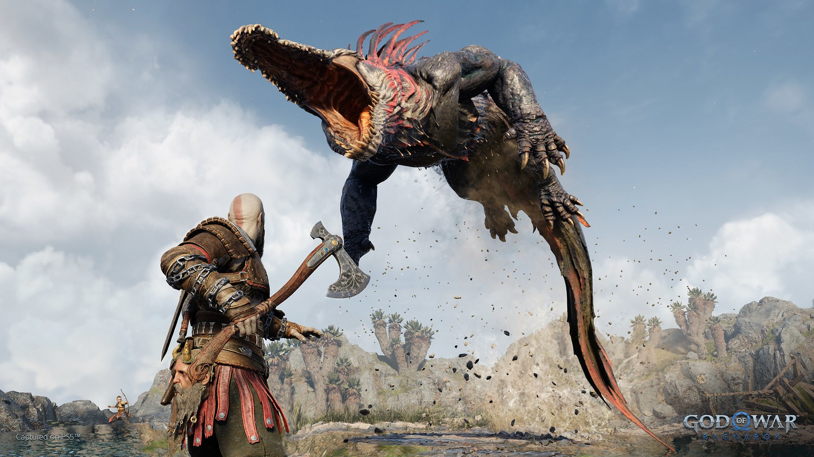
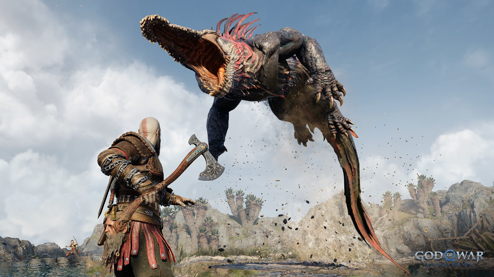

GOD OF WAR RAGNAROK

No podríamos estar más emocionados en Santa Monica Studio por finalmente compartir nuestro primer vistazo real a God of War Ragnarök a todos los fans que han sido muy pacientes esperando por una actualización.
Como pueden ver en el tráiler, estamos retomando unos cuantos años después de los eventos de God of War (2018). Los vientos helados de Fimbulwinter han llegado a Midgard, haciendo que la supervivencia para Kratos, Atreus y Mimir en la salvaje tierra Nórdica sea más retadora que antes.
Si bien el último juego se construyó sobre una gran cantidad de confianza y entendimiento entre padre e hijo, aún hay bastante complejidad en sus interacciones – especialmente después de la revelación de la gran herencia de Atreus y la profecía escondida que solo Kratos vio.
 

Agonía y Venganza
Dimos un breve vistazo a los dos principales antagonistas que enfrentarán en God of War Ragnarök: Freya y Thor.
Por las acciones de Kratos al final del anterior juego, Freya, una vez aliada convertida en enemiga, ha jurado venganza por la muerte de su hijo, Baldur.
Queríamos recordarles a los jugadores que Freya no solo es una poderosa y terrorífica usuaria de la magia Vanir, sino también que es una guerrera formidable por derecho propio. Enfurecida por la evasión de Kratos, Freya dirigirá todas las armas a su disposición hacia el asesino de su hijo.
También sufriendo la pérdida de sus hijos y medio hermano, la legendaria sed de sangre e ira de Thor se dirigirá a Kratos y Atreus.
Elementos clásicos de anteriores entregas
God of War Ragnarok ya tiene disponible su impresionante arte oficial, el cual ha desvelado un par de detalles curiosos que quizá vayan más allá.
No sabemos si habrá algún guiño a la trilogía original en Ragnarok, pero en el arte podemos ver un casco de espartano gigante. ¿Implica esto que veremos a Kratos convertido en gigante?
Otro detalle interesante del arte oficial es que podemos ver a Jörmungandr (hija de Angrboda) congelada bajo el hielo. Aparecen dos monstruos: un Dreki o Lindworm (una serpiente-dragón) y un Stalker (un centauro astado)
Tanto en el tráiler como en el arte, aparecen los cuervos. Estos son los ojos y oídos de Odín, y puede que vuelvan a ser un coleccionable en God of War Ragnarok.
Estamos muy felices de poder compartir una pequeña prueba de lo que hemos estado trabajando en Santa Monica Studio desde el lanzamiento de God of War en 2018.
Honkai Star Rail: cómo acceder a la beta cerrada en PC y mobile de lo nuevo de los creadores de Genshin Impact
A partir de hoy, 8 de octubre, los jugadores que tengan ganas de probar lo nuevo de MiHoYo podrán hacerlo a través de una beta abierta...
Leer mas
eFootball 2022 recibe una oleada de críticas negativas de usuarios en Steam
eFootball 2022 ya está disponible para descargar gratis en consolas y PC. A las pocas horas del lanzamiento la tienda de Valve indica unas opiniones "Extremadamente negativas" donde muchos fans se quejan de diversos aspectos, desde el limitado contenido -que se espera que se solucione en un futuro- a aspectos técnicos, jugables y bugs. Las redes sociales también empiezan a recoger fallos e imágenes con el rostro de algunas estrellas que, en ocasiones, son un poco irreconocibles
Leer mas
Beta de Battlefield 2042: fecha, horarios y cómo descargar
Battlefield 2042 celebra esta semana su beta abierta. La prueba gratuita está disponible en todas las plataformas: PC, PlayStation 5, PlayStation 4, Xbox Series X/S y Xbox One. La precarga se activó en la mañana del 5 de octubre, por lo que ya se puede instalar. Sin embargo, el acceso no será simultáneo para todos los jugadores.
Leer masYa puedes apartar Horizon Forbidden West y su edición especial para PS4 y PS5
La semana pasada, Sony Interactive Entertainment mostró todas las ediciones de Horizon Forbidden West que estarán disponibles. Si bien las ediciones de colección volaron y sólo duraron pocos minutos en preventa, todavía hay algunas de ellas que puedes conseguir. ¿Quieres saber cuáles y cómo? Aquí te decimos como apartarlas.
Leer masSiguenos a FullGamingNews